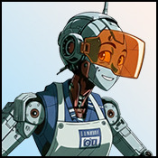

Player wiki noticeThis community-maintained page may contain gameplay, story, and mature-content spoilers.

概览
BR10DR 是那个机器人酒保 合成人再充电站 未来 总理。他提供了配对的肖像反应和环境条对话框,包括他的常规笑话。他当前的角色数据包含 没有个人关系动作或H2H路线.
快速信息
| 属性 | 数值 |
|---|---|
| 大纪元/对齐 | 未来/ 中立 |
| 地点 | 总理区合成人加油站 |
| 时间表 | 整天,每天都这样 |
| 作用 | 机器人酒保 |
| 最喜欢的数据/特殊关系技能 | 无配置 |
查找 BR10DR
一旦你能够前往 未来打开 总理 映射并输入 合成人再充电站. BR10DR 安排在那里 一天24小时,没有额外的个人招聘或感情的先决条件。
他的肖像和环境对话可以因访问而异,这些变化并不代表H2H序列或感情奖励,该站没有自己的普通位置动作列表,BR10DR的个人动作列表是空的.
充电站的场景
电台还主持其他角色的场景和主场活动,其要求属于这些路线,而不是隐藏的BR10DR关系:
| 活动 | 先决条件/ 窗口 | 怎么办 |
|---|---|---|
| Story第33集 | 第32集,至少20,000美元;下午6点 | 参观自动场景的车站 |
| Story 击打 67 | 第66话,任何时间 | 回车站去 |
| Story 击败 70 | 第69话,任何时间 | 回车站去 |
| 收取会费——律师协会 | 完成Zodiac的收集简报;以前尚未完成 | 探险期间的访问;登记处不增加时间限制 |
关系内容
目前有 没有谈话按钮,礼物,日期,技能课,插图H2H或公寓对话 。他没有最喜欢的状态阈值或特殊关系技能。关系阶段的肖像条目重用他的环境对话框;列表的阶段没有建立可播放的个人路线。
如果您来到一个故事或探险触发器之外,只看到酒保的问候,这与他执行的角色相符。 建立不相关的关系或等待某个小时不会解锁缺失的 BR10DR 浪漫动作 。
相关页面
Overview
BR10DR is the robot bartender at the Synthetic Beings Recharge Station in the Future's Prime Sector. He provides paired portrait reactions and ambient bar dialogue, including his regular jokes. His current character data contains no personal relationship actions or H2H route.
Quick Info
| Attribute | Value |
|---|---|
| Era / alignment | Future / Neutral |
| Location | Synthetic Beings Recharge Station, Prime Sector |
| Schedule | All day, every day |
| Role | Robot bartender |
| Favorite stats / special relationship skill | None configured |
Finding BR10DR
Once you can travel to the Future, open the Prime Sector map and enter the Synthetic Beings Recharge Station. BR10DR is scheduled there 24 hours a day, with no additional personal recruitment or affection prerequisite.
His portrait and ambient dialogue can vary between visits. These changes do not represent an H2H sequence or an affection reward. The station has no ordinary location action list of its own, and BR10DR's personal action list is empty.
Scenes at the Recharge Station
The station also hosts other characters' scenes and main-story events. Their requirements belong to those routes rather than a hidden BR10DR relationship:
| Event | Prerequisite / window | What to do |
|---|---|---|
| Story Beat 33 | Complete Beat 32; at least $20,000; 6 PM–midnight | Visit the station for the automatic scene |
| Story Beat 67 | Complete Beat 66; any hour | Return to the station |
| Story Beat 70 | Complete Beat 69; any hour | Return to the station |
| Collecting Dues — The Bar | Complete Zodiac's collection briefing; not previously completed | Visit during that quest; the registry adds no hour restriction |
These events do not award BR10DR affection. Follow Zodiac, Riki and the main-story walkthrough for their broader quest prerequisites and subsequent steps.
Relationship Content
There is currently no Talk button, gift, date, skill lesson, illustrated H2H or apartment conversation registered for BR10DR. He has no favorite-stat thresholds or special relationship skill. The relationship-stage portrait entries reuse his ambient dialogue pool; a listed stage does not establish a playable personal route.
If you arrive outside a story or quest trigger and see only the bartender's greeting, that matches his implemented role. Raising unrelated relationships or waiting for a particular hour will not unlock a missing BR10DR romance action.
Related Pages
Text adapted from the community-maintained Chronoromancer Wiki under CC BY-SA 4.0.